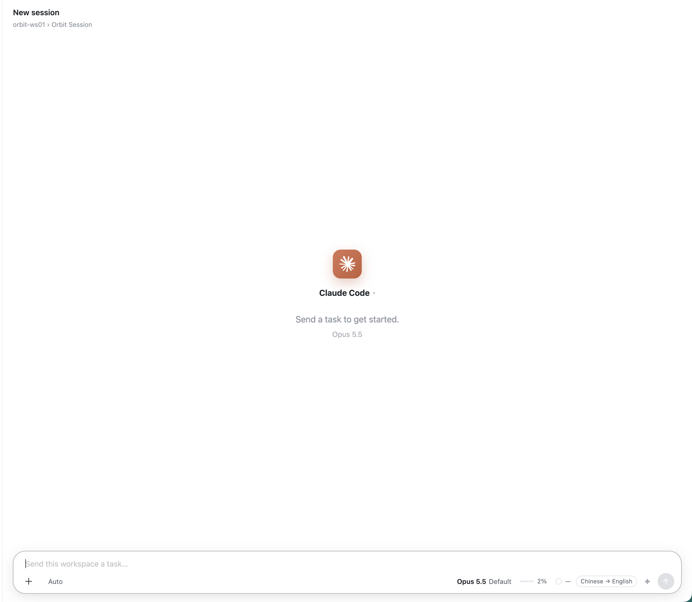

?folder= 跟着变。| 项 | A | B（推荐） | C |
|---|---|---|---|
| 宽窗口顶栏 | 保留，副标题可点 | 不画 | 保留，右侧放位置按钮 |
| 工作区/文件夹 | 左上角 chip | 引擎名下面 chip | 右上角一个按钮 |
| 中间模型行 | 删 | 删 | 删 |
| 手机 | 同今天 + chip | ← New session，位置在中间 | 同 A |
| 解决 ①–④ | ①③ 半个② | ①②③④ | ③ 半个②④ |
src/web/src/components/WorkspaceView.tsx 草稿顶栏（composing 分支、headSub）src/web/src/components/NewSessionProviderHero.tsx 加位置行，删 np-current-modelsrc/web/src/index.css 位置 chip 样式NewSessionProviderHero.test.tsx、WorkspaceView.projectIntent.test.tsxAgentsView.swift）、Android（NewSessionComposer.kt）本轮不动，除非你要一起改。